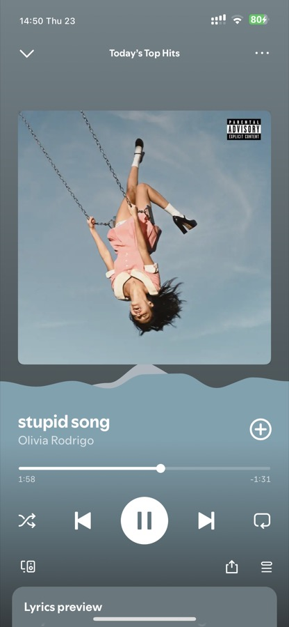
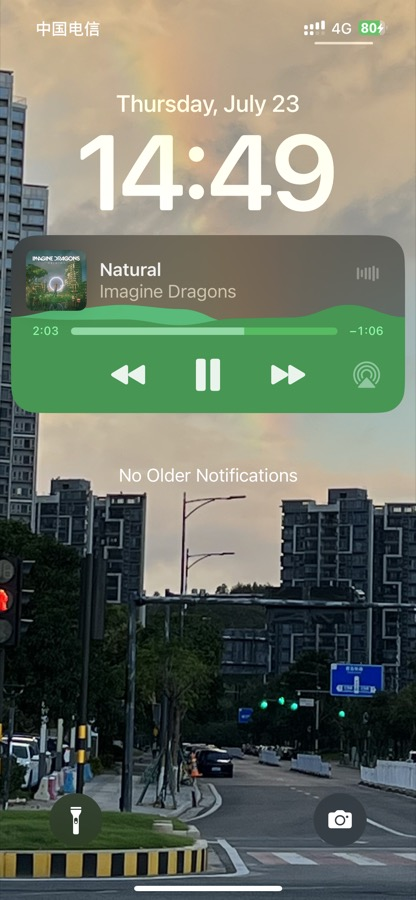
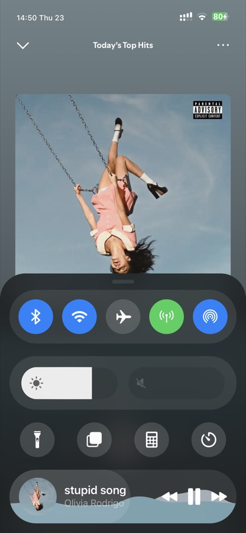
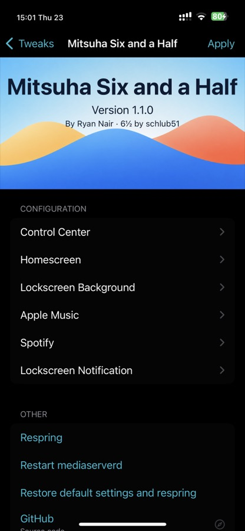

An audio-reactive wave for Spotify, Apple Music, the Lock Screen, Home Screen, Lock Screen media controls, and the Jade Control Center media module.
Mitsuha Six and a Half is a repair fork of Mitsuha Six, focused on iOS 16/rootless reliability and cleaner Spotify colors.




Tested on iOS 16.4.1 rootless with Dopamine. iOS 15 and iOS 17 are untested.
Installs libmitsuha65 and AudioSnapshotServer 2 automatically.
Based on Mitsuha Six by Ryan Nair, descended from Mitsuha by c0ldra1n, MitsuhaXI / Infinity by Nepeta, and Mitsuha Forever by ConorTheDev. Visualizer engine by Andy Shin and Nepeta. Siri styles and coloring by biD3V. Six and a Half by schlub51.
MIT. Community build made with AI-assisted coding and device testing. Source: github.com/schlub51/MitsuhaSixAndAHalf